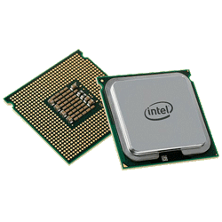

Transistor
En transistor er en elektronisk komponent som brukes sammen med andre elektroniske komponenter til å forsterke eller generere signaler, eller som en bryter for å slå på og av signaler eller energitransport.CPU
Hjernen til data styringen der du kan programere hvordan den skal fungere mer om cpu legge sammen tall? hvordan jeg gjør det bruker binærtall for det gjør det mye enklere Minne
RAM: brukes oftest om hovedhukommelse eller hovedminnet. Dette er den delen av minnet i en datamaskin der prosesser ligger klare for kjøring av et program/prosess i maskinen.
ROM: leselager, hukommelsesbrikke i datamaskin der innholdet er lagret fast , slik at det ikke kan slettes eller endres fra et program. ROM-egenskapen er viktig for å hindre uhell, for eksempel overskriving eller sletting av oppstartprogrammer. Det finnes flere typer RAM. Mest utbredt tidlig på 2000-tallet er DRAM (dynamisk RAM), som er kjapp og rimelig, men som krever at kondensatorene der dataene lagres må friskes opp flere hundre ganger per sekund. SRAM (statisk RAM) er raskere, fordi bitene lagres i flipflop-kretser i stedet for kondensatorer.
Lagring
En harddisk er et magnetisk lagringsmedium hvor data lagres på magnetiske plater som spinner rundt. Som vi ser på bildet over består en harddisk av en eller flere plater som er plassert over hverandre hvor data lagres. Data leses og skrives av flere lese- og skrivehoder som sitter ytterst på en mekanisk arm som kan beveges frem og tilbake over platen.
SSD er et lagringsmedium som benytter flashminne istedenfor mekanisk/magnetiske plater til å lagre data. Siden den ikke har bevegelige deler, er søketiden raskere enn for en mekanisk harddisk og tåler bedre støt enn vanlige harddisker. SSD støyer minimalt.
Eldre teknologi
Digital lyd
KOMPRIMERING: trykke sammen,presse sammen. Tar bort lyd som foreksempel lyd som ikke mennekser kan høre. kvaliteten blir litt dårligere men da gjelder det å ta bort lyder som vi ikke hører. KBPS= kilobits per sekund. Jo mere kbps jo større er filen
DIGITALISERING: Digitalisering av lyd og bilde ("digitizing") er prosessen der analoge signaler, lyd eller bilder, gjøres om til elektronisk, fortrinnsvis digital informasjon. Bøker, kart og dokumenter digitaliseres via skanning eller via fotografering med et digitalkamera. I 2017 ble f.eks. norsk radio digitalisert ved overgangen fra FM til DAB.